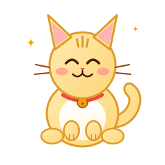
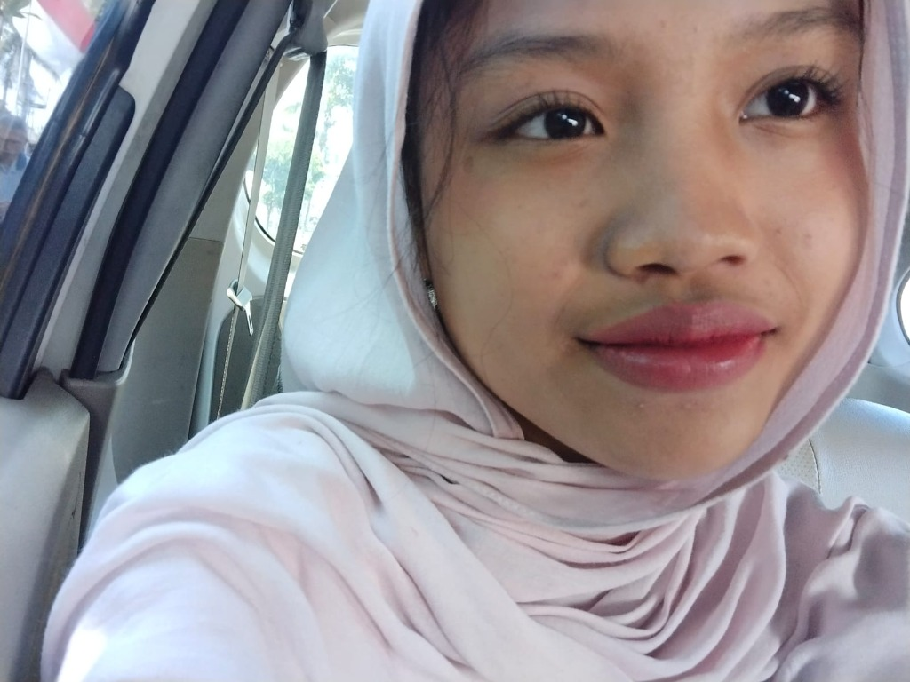
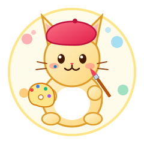

Halo! Saya
Kayla Mahira Putri
Selamat datang di situs pribadi saya! Saya adalah siswi yang bersemangat mempelajari dunia teknologi jaringan, robotika modern, dan menuangkan kreativitas melalui seni gambar serta alunan musik. Senang Anda dapat berkunjung ke laman ini.

Catatan Kucing Manis: "Terus belajar dan berinovasi dengan riang gembira setiap hari!"

Profil Siswi
Mengenal latar belakang, jurusan, ekstrakurikuler, dan minat kegemaran saya 🐾
Pendidikan & Kejuruan
Saat ini saya sedang menempuh pendidikan di SMK Telkom Malang pada tingkatan Kelas 10 dengan peminatan kejuruan Teknik Komputer dan Jaringan (TKJ).
Di jurusan TKJ, saya mendalami dasar-dasar arsitektur jaringan komputer, perakitan dan konfigurasi perangkat keras, sistem operasi jaringan, serta pengelolaan data yang menjadi fondasi penting di era digital modern.
Ekstrakurikuler Robotik
Aktif di Komunitas Robotik Sekolah
Saya aktif mengikuti ekstrakurikuler Robotik di SMK Telkom Malang. Di sini, saya mengasah kemampuan perakitan perangkat keras cerdas, logika algoritma, serta kerja sama tim dalam memecahkan tantangan teknologi otomatisasi.
Hobi & Kegemaran Kreatif
Selain berfokus pada ranah teknik komputer, saya senang menyalurkan imajinasi dan menjaga keseimbangan pikiran melalui kegiatan kreatif:

Hobi Menggambar
Mengekspresikan imajinasi lewat sketsa, corat-coret kreatif, dan ilustrasi estetis.
Mendengarkan Musik
Menemani aktivitas belajar dan berkarya dengan irama melodi yang menenangkan jiwa.
🖼️ Galeri Karya Seni & Sketsa
Mari Terhubung!
Terima kasih banyak telah berkunjung ke situs web saya. Jika Anda tertarik berdiskusi mengenai proyek teknologi, jaringan komputer, atau berbagi inspirasi karya seni, silakan hubungi saya melalui akun Instagram resmi di bawah ini: